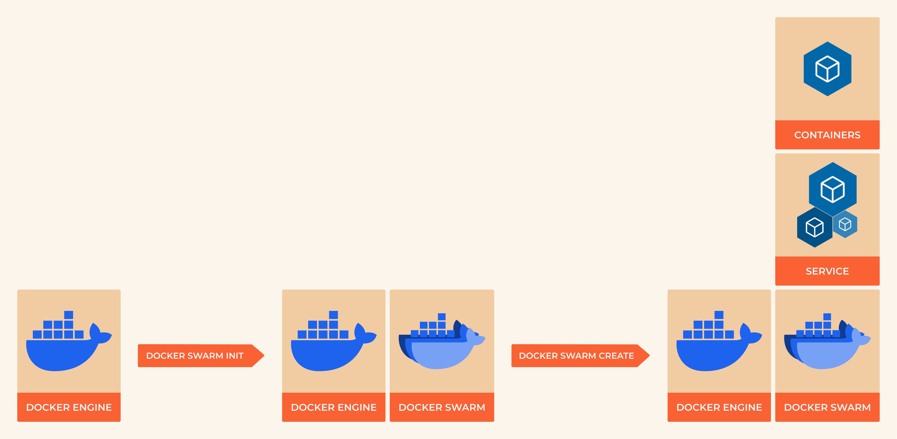

8.6 Container Orchestration
{kind=link}

From Single Containers to Applications
Running individual containers is like assembling a car one bolt at a time. Modern applications consist of multiple services that need to work together: web servers, databases, caches, message queues, and more. Container orchestration tools coordinate these services, handling networking, scaling, health monitoring, and updates automatically.
This section covers Docker Compose for development and testing, plus an introduction to production orchestration concepts that lead into Kubernetes.
Learning Objectives
By the end of this section, you will:
Define multi-container applications using Docker Compose
Manage application lifecycles with compose commands
Configure inter-service networking and data persistence
Implement development workflows with live code reloading
Understand the progression from Compose to production orchestration
Deploy applications to Docker Swarm for high availability
Prerequisites: Understanding of Dockerfiles, container networking basics, and YAML syntax
Why Orchestration Matters
The Multi-Container Challenge
Modern applications face several complexity challenges:
Service Discovery: How does the web app find the database?
Load Balancing: How do you distribute traffic across multiple instances?
Health Monitoring: What happens when a service crashes?
Rolling Updates: How do you update services without downtime?
Resource Management: How do you ensure services get the resources they need?
Configuration Management: How do you handle different environments?
Orchestration Solutions Landscape:
Tool |
Best For |
Complexity |
Scale |
|---|---|---|---|
Docker Compose |
Development, Testing |
Low |
Single Host |
Docker Swarm |
Simple Production |
Medium |
Multi-Host |
Kubernetes |
Enterprise Production |
High |
Massive Scale |
Nomad |
Mixed Workloads |
Medium |
Multi-Cloud |
Docker Compose Deep Dive
What is Docker Compose?
Docker Compose is a tool for defining and running multi-container applications. You describe your entire application stack in a single YAML file, then bring it up with one command.
Core Concepts:
Services: Individual containers that make up your application
Networks: Communication channels between services
Volumes: Persistent data storage shared between containers
Environment: Configuration that changes between deployments
A Real-World Example: Full-Stack Web Application
Let’s build a complete web application with frontend, backend, database, and cache:
Project Structure:
web-app/
├── docker-compose.yml
├── frontend/
│ ├── Dockerfile
│ ├── package.json
│ └── src/
├── backend/
│ ├── Dockerfile
│ ├── requirements.txt
│ └── app.py
└── nginx/
└── nginx.conf
Backend API (Flask):
# backend/app.py
from flask import Flask, jsonify, request
from flask_cors import CORS
import redis
import psycopg2
import os
app = Flask(__name__)
CORS(app)
# Database connection
def get_db():
return psycopg2.connect(
host=os.environ.get('DB_HOST', 'postgres'),
database=os.environ.get('DB_NAME', 'webapp'),
user=os.environ.get('DB_USER', 'postgres'),
password=os.environ.get('DB_PASSWORD', 'password')
)
# Redis connection
cache = redis.Redis(
host=os.environ.get('REDIS_HOST', 'redis'),
port=6379,
decode_responses=True
)
@app.route('/api/health')
def health_check():
return jsonify({'status': 'healthy', 'service': 'backend'})
@app.route('/api/users', methods=['GET', 'POST'])
def users():
if request.method == 'POST':
data = request.json
# Store in database
conn = get_db()
cursor = conn.cursor()
cursor.execute(
"INSERT INTO users (name, email) VALUES (%s, %s) RETURNING id",
(data['name'], data['email'])
)
user_id = cursor.fetchone()[0]
conn.commit()
conn.close()
# Cache the user
cache.set(f"user:{user_id}", data['name'], ex=3600)
return jsonify({'id': user_id, 'message': 'User created'}), 201
else:
# Get from database
conn = get_db()
cursor = conn.cursor()
cursor.execute("SELECT id, name, email FROM users")
users = cursor.fetchall()
conn.close()
return jsonify([
{'id': u[0], 'name': u[1], 'email': u[2]} for u in users
])
if __name__ == '__main__':
app.run(host='0.0.0.0', port=5000, debug=True)
Backend Dockerfile:
# backend/Dockerfile
FROM python:3.11-slim
WORKDIR /app
# Install system dependencies
RUN apt-get update && apt-get install -y \
gcc \
postgresql-client \
&& rm -rf /var/lib/apt/lists/*
# Install Python dependencies
COPY requirements.txt .
RUN pip install --no-cache-dir -r requirements.txt
# Copy application code
COPY . .
EXPOSE 5000
CMD ["python", "app.py"]
Requirements file:
# backend/requirements.txt
Flask==2.3.3
Flask-CORS==4.0.0
redis==5.0.0
psycopg2-binary==2.9.7
The Complete docker-compose.yml:
version: '3.8'
services:
# Frontend (React/nginx)
frontend:
build:
context: ./frontend
dockerfile: Dockerfile
ports:
- "3000:80"
depends_on:
- backend
environment:
- REACT_APP_API_URL=http://localhost:5000
networks:
- app-network
# Backend API
backend:
build:
context: ./backend
dockerfile: Dockerfile
ports:
- "5000:5000"
environment:
- DB_HOST=postgres
- DB_NAME=webapp
- DB_USER=postgres
- DB_PASSWORD=securepassword
- REDIS_HOST=redis
depends_on:
postgres:
condition: service_healthy
redis:
condition: service_started
volumes:
- ./backend:/app # Hot reload for development
networks:
- app-network
# PostgreSQL Database
postgres:
image: postgres:15-alpine
environment:
- POSTGRES_DB=webapp
- POSTGRES_USER=postgres
- POSTGRES_PASSWORD=securepassword
volumes:
- postgres_data:/var/lib/postgresql/data
- ./init.sql:/docker-entrypoint-initdb.d/init.sql:ro
healthcheck:
test: ["CMD-SHELL", "pg_isready -U postgres"]
interval: 10s
timeout: 5s
retries: 5
networks:
- app-network
# Redis Cache
redis:
image: redis:7-alpine
command: redis-server --appendonly yes
volumes:
- redis_data:/data
healthcheck:
test: ["CMD", "redis-cli", "ping"]
interval: 10s
timeout: 3s
retries: 5
networks:
- app-network
# Reverse Proxy (Production)
nginx:
image: nginx:alpine
ports:
- "80:80"
volumes:
- ./nginx/nginx.conf:/etc/nginx/nginx.conf:ro
depends_on:
- frontend
- backend
networks:
- app-network
# Persistent storage
volumes:
postgres_data:
driver: local
redis_data:
driver: local
# Custom network for service communication
networks:
app-network:
driver: bridge
ipam:
config:
- subnet: 172.20.0.0/16
Database Initialization:
-- init.sql
CREATE TABLE IF NOT EXISTS users (
id SERIAL PRIMARY KEY,
name VARCHAR(100) NOT NULL,
email VARCHAR(100) UNIQUE NOT NULL,
created_at TIMESTAMP DEFAULT CURRENT_TIMESTAMP
);
INSERT INTO users (name, email) VALUES
('Alice Johnson', 'alice@example.com'),
('Bob Smith', 'bob@example.com');
Compose Commands Mastery
Essential Lifecycle Commands:
# Start the entire application
docker-compose up
# Start in background (detached mode)
docker-compose up -d
# Build images before starting
docker-compose up --build
# Start specific services only
docker-compose up frontend backend
# View running services
docker-compose ps
# View service logs
docker-compose logs
docker-compose logs -f backend # Follow logs for specific service
# Stop services gracefully
docker-compose stop
# Stop and remove containers, networks, volumes
docker-compose down
# Remove everything including volumes (destructive!)
docker-compose down -v
Development Workflow Commands:
# Rebuild a specific service
docker-compose build backend
# Restart a service (useful after code changes)
docker-compose restart backend
# Scale services horizontally
docker-compose up --scale backend=3
# Execute commands in running containers
docker-compose exec backend python manage.py migrate
docker-compose exec postgres psql -U postgres webapp
# Run one-off commands
docker-compose run backend python -c "print('Hello from container')"
Monitoring and Debugging:
# View resource usage
docker-compose top
# Monitor logs from all services
docker-compose logs -f
# Check service health
docker-compose ps --services --filter "status=running"
# Get IP addresses of services
docker-compose exec backend nslookup postgres
Advanced Compose Features
Environment-Specific Configurations
Base compose file (docker-compose.yml):
version: '3.8'
services:
backend:
build: ./backend
environment:
- DB_HOST=postgres
volumes:
- ./backend:/app
Development override (docker-compose.override.yml):
version: '3.8'
services:
backend:
environment:
- DEBUG=true
- LOG_LEVEL=debug
ports:
- "5000:5000"
Production override (docker-compose.prod.yml):
version: '3.8'
services:
backend:
environment:
- DEBUG=false
- LOG_LEVEL=warning
deploy:
replicas: 3
resources:
limits:
memory: 512M
reservations:
memory: 256M
Usage:
# Development (uses override.yml automatically)
docker-compose up
# Production
docker-compose -f docker-compose.yml -f docker-compose.prod.yml up
Secrets Management:
# Use external secrets (Docker Swarm)
secrets:
db_password:
external: true
services:
backend:
secrets:
- db_password
environment:
- DB_PASSWORD_FILE=/run/secrets/db_password
Health Checks and Dependencies:
services:
postgres:
healthcheck:
test: ["CMD-SHELL", "pg_isready"]
interval: 30s
timeout: 10s
retries: 3
start_period: 60s
backend:
depends_on:
postgres:
condition: service_healthy
Production Considerations
Resource Limits and Constraints:
services:
backend:
deploy:
resources:
limits:
cpus: '2.0'
memory: 1G
reservations:
cpus: '1.0'
memory: 512M
restart_policy:
condition: on-failure
delay: 5s
max_attempts: 3
Logging Configuration:
services:
backend:
logging:
driver: "json-file"
options:
max-size: "10m"
max-file: "3"
Security Hardening:
services:
backend:
user: "1000:1000" # Non-root user
read_only: true # Read-only root filesystem
tmpfs:
- /tmp # Writable temporary filesystem
security_opt:
- no-new-privileges:true
Docker Swarm Introduction
When to Use Swarm vs Kubernetes
Docker Swarm is Docker’s native clustering solution:
Swarm Advantages:
Simple setup: Easy to learn if you know Docker Compose
Built-in: Comes with Docker Engine
Familiar syntax: Uses compose file format
Good enough: Handles most production scenarios
Kubernetes Advantages:
Feature-rich: More advanced scheduling and networking
Ecosystem: Vast ecosystem of tools and operators
Industry standard: Most cloud providers have managed Kubernetes
Flexibility: Supports complex deployment patterns
Basic Swarm Setup:
# Initialize a swarm (on manager node)
docker swarm init
# Join worker nodes (run on worker machines)
docker swarm join --token <worker-token> <manager-ip>:2377
# Deploy compose application to swarm
docker stack deploy -c docker-compose.yml myapp
# List stacks
docker stack ls
# List services in a stack
docker stack services myapp
# Check service logs
docker service logs myapp_backend
# Scale a service
docker service scale myapp_backend=5
# Remove stack
docker stack rm myapp
Development Best Practices
Project Organization:
project/
├── docker-compose.yml # Main compose file
├── docker-compose.override.yml # Development overrides
├── docker-compose.prod.yml # Production config
├── .env # Environment variables
├── .env.example # Template for environment vars
├── services/
│ ├── frontend/
│ ├── backend/
│ └── database/
└── docs/
└── deployment.md
Environment Variables:
# .env file
COMPOSE_PROJECT_NAME=myapp
POSTGRES_PASSWORD=dev_password_change_in_prod
REDIS_URL=redis://redis:6379
API_URL=http://localhost:5000
Development Workflow:
# Initial setup
git clone <repository>
cd project
cp .env.example .env
# Edit .env with your values
# Start development environment
docker-compose up -d
# Run tests
docker-compose exec backend pytest
# Access database
docker-compose exec postgres psql -U postgres
# View logs
docker-compose logs -f backend
# Clean shutdown
docker-compose down
Troubleshooting Guide
Common Issues and Solutions:
Services can’t communicate:
# Check if services are on the same network
docker network ls
docker network inspect <network_name>
# Test connectivity between services
docker-compose exec frontend ping backend
docker-compose exec backend nslookup postgres
Port already in use:
# Find what's using the port
lsof -i :5000 # macOS/Linux
netstat -ano | findstr :5000 # Windows
# Change port in compose file or stop conflicting service
Permission issues with volumes:
# Fix with user mapping
services:
backend:
user: "${UID}:${GID}"
volumes:
- ./backend:/app
Database connection issues:
# Check database is ready
docker-compose exec postgres pg_isready
# Check database logs
docker-compose logs postgres
# Test connection manually
docker-compose exec backend python -c "
import psycopg2
conn = psycopg2.connect('host=postgres user=postgres password=password')
print('Connected successfully')
"
Practical Exercises
Exercise 1: WordPress Stack
Create a compose file for WordPress with MySQL and Redis cache.
Exercise 2: Microservices Demo
Build a microservices application with API gateway, user service, and product service.
Exercise 3: Development Environment
Set up a development environment with hot reloading, test database, and debugging tools.
What’s Next?
You now understand how to orchestrate multi-container applications for development and simple production scenarios. The next chapter covers container security, monitoring, and best practices for production deployments.
Key takeaways:
Docker Compose simplifies multi-container application management
Service discovery and networking are handled automatically
Health checks and dependencies ensure proper startup order
Environment-specific configurations enable dev/test/prod workflows
Resource limits and logging are essential for production
Note
Production Path: While Compose is great for development, production workloads typically benefit from Kubernetes for advanced features like auto-scaling, rolling updates, and multi-cluster deployments.